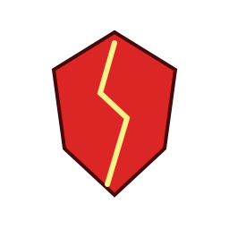
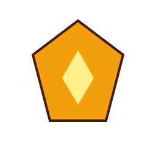

EN
◐


潮汐星图 · X 轴声景画廊规则
本声景舞台采用
L-A4 X 轴横向滑轨
与
零母语沉浸
：
可左右滑动白砂声景卡片，或推开左侧障子门切换课程；点击卡片中央声波按钮播放高低音调旋律。
完成声景共振后，底部 4 枚 FSRS-5 符号解锁，点击记录本次记忆稳定性。
重来 (Again)
困难 (Hard)
良好 (Good)
轻松 (Easy)
 良好 (Good)
良好 (Good) 轻松 (Easy)
轻松 (Easy)